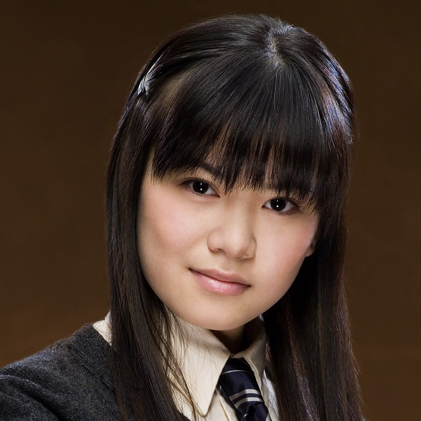

Cho Chang
"Obviously, she is feeling very sad, because of Cedric dying. Then I expect she's feeling confused because she liked Cedric and now she likes Harry, and she can't work out who she likes best. Then she'll be feeling guilty, thinking it's an insult to Cedric's memory to be kissing Harry at all... And she probably can't work out what her feelings are towards Harry anyway, because he was the one who was with Cedric when Cedric died, so that's all very mixed up and painful."
——Hermione Granger regarding Cho's grief.
Cho Chang (b. 1978/1979) was a witch who attended Hogwarts School of Witchcraft and Wizardry from 1990-1997 and was sorted into Ravenclaw House. She was a Seeker for the Ravenclaw Quidditch team and a popular student. In Cho's fifth year, she began dating Cedric Diggory while he was a Champion in the Triwizard Tournament. Cedric became one of the first casualties of the Second Wizarding War. He was murdered by Peter Pettigrew on Lord Voldemort's order in June of 1995. His death greatly upset Cho and made her determined to fight against the recently returned Dark Lord.
In her sixth year, against her parents' wishes she joined Dumbledore's Army, an organisation taught and led by Harry Potter. In the same year she also began a romantic relationship with Harry. However, Cho's best friend Marietta Edgecombe betrayed the D.A.. After her friend's betrayal Cho and Harry's relationship fell apart. She remained loyal to her school and to the D.A., returning after she had graduated to participate in the Battle of Hogwarts.
Cho survived the Second Wizarding War and eventually married a Muggle.

Cho Chang
Gender: Female
Hair Colour: Black
Family: Mr. Chang, Mrs. Chang
Spouse: Muggle
House: Ravenclaw
Patronus: Swan
Blood-Status: Half-Blood or Pure-Blood
Wand: Unknown
Title(s): Seeker
Personality And Traits
Ron Weasley:"You're well out of it, mate. I mean, she's quite good-looking and all that, but you want someone a bit more cheerful."
Harry Potter: "She's probably cheerful enough with someone else."
—— Ron Weasley and Harry Potter discussing Cho
Having been sorted into Ravenclaw House, Cho was presumably intelligent, enforced by her mastery of all defence magic that Harry taught her, including the Patronus Charm, though she did admit that she was unable to stun anything before Harry taught her. She was also an avid Quidditch fan (having supported the Tutshill Tornados since she was six years old) and a good athlete, playing Seeker for her House's team. She was a popular student at Hogwarts, with a large group of friends and many boys who admired her for her extreme beauty. She was also loyal and brave, having been loyal to the Tutshill Tornados for many years as opposed to jumping the bandwagon, joining Dumbledore's Army in defiance with the Ministry in order to avenge the death of her late boyfriend Cedric, sticking up for her friend Marietta when the rest of the group ousted her for treason, and returning to Hogwarts in her seventh year in order to fight alongside her comrades and defend the school from Death Eaters.
For the most part, Cho was often found around Hogwarts with a gaggle of girlfriends, though after one of her emotional breakdowns over Cedric's death, they apparently left her during her depression. Despite this, Cho was a very loyal person; when she and her friend Marietta Edgecombe joined Dumbledore's Army, she insisted on bringing her friend along even when her friend expressed disinterest and cynicism to the club's effects. Later, even though Marietta eventually sold out the DA to Umbridge and the Ministry of Magic, Cho stood by her and insisted to the accusatory Harry that Marietta was a "lovely person" who "just made a mistake." Her loyalty was shown again when she came back to Hogwarts to fight even after she had graduated, and offered to show Harry up to the Ravenclaw Tower, indicating that she harboured no hard feelings against them despite their previously fallen out romantic relationship.
Cho was perceived by Harry Potter and Ron Weasley to be excessively emotional, though as Hermione stated, much of this characterisation was attributed to her behaviour and actions directly after her boyfriend's death, pushing her way through the trauma and grief that is only observed from the periphery. During her grief, she was prone to many crying spells and a difficult control over her emotions, leading to a prying sort of aggression when she dated Harry to get the details of Cedric's death, and also the jealousy that ensued when Harry would bring up Hermione Granger for what Cho saw to be flippant insensitivity from Harry's end. Hermione, for her part, did not seem to blame Cho at all, understanding her grief and depression and stating that it had interfered with many aspects of Cho's life, including Cho's grades and her position on the Quidditch team.
Cho has also said that she and Roger Davies used to date; after Ravenclaw's loss of the House Cup in 1995, Ginny Weasley said that Michael Corner had gone to comfort Cho. Later in life, she married a Muggle.
Magical Abilities And Skills
"She's a fourth year, and she's good...." ——Oliver Wood regarding Cho's talent at flying
- Flight: Cho flew excellently, so much so that she was chosen to play the position of Seeker on the Ravenclaw Quidditch team. However, according to Hermione, Cho's flying skills suffered intensely due to her grief over Cedric's death, to the extent where she was actually afraid she would lose her position on the Ravenclaw Quidditch team.
- Charms: Whilst the extent of Cho's ability at Charms was unknown, she did learn how to successfully conjure a corporeal Patronus in her sixth year, which is a very advanced piece of magic and a sign of superior magical ability. Her Patronus took the form of a swan, which can be symbolic for her love for Cedric in that swans mate for life.
- Defence Against the Dark Arts: Considering she trained with the D.A., Cho should be proficient at defensive magic, her skills furthered by the fact she fought in and survived the Second Wizarding War.
Possesions
- Wand: Cho's wand is of unknown length, wood, and core. Like most wizards and witches in Great Britain, she most likely purchased it at the age of eleven from Garrick Ollivander before beginning her education at Hogwarts School of Witchcraft and Wizardry in 1990.
- Dress robes: Cho wore silver East Asian-style robes to the Yule Ball in 1994, which she attended with Cedric Diggory.
"It means they're not real fans, they're just jumping on the bandwagon —" ——Ron regarding Cho's badge.
- Tornados badge: Cho Chang was a great fan of the Tornados Quidditch team and showed her support by owning and wearing one of their badges.
- Comet 260: Cho owned this model of broom and used it while on the Ravenclaw Quidditch team. She was seen riding it in her match against Harry Potter in 1994.